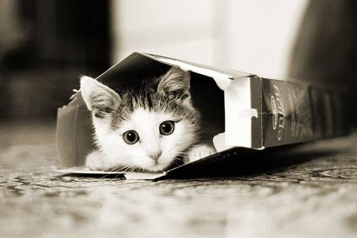

<!DOCTYPE html>
<html lang="en">
	<head>
		<meta charset="UTF-8">
		<title>轮播图</title>
		<style>
			.wrap{
				width:900px;
				height:200px;
				font-size:0;
				overflow:hidden;
				border:5px solid grey;
				margin:50px auto;
				position:relative;
			}
			.cont{
				width:2400px;
				height:200px;
				position:absolute;
				top:0;
				left:0;

			}
			.wrap img{
				width:300px;
				height:200px;
				vertical-align:top;
			}
		</style>
	</head>
	<body>
		<div class="wrap">
			<div class="cont">
<!-- 				
				
				
				
				
				
				
				 -->
			</div>
		</div>
		<script>
		// 思路：利用定时器自动播放，当图片播放到最后一张，将oCont的left值拉回来，但为了无缝衔接，要在img图片最后接上前几张图片(页面上显示几张图片就接几张)
			var wrap=document.getElementsByClassName("wrap")[0];
			var oCont=wrap.getElementsByClassName("cont")[0];

			var aImg=["dog1.jpg","cat2.jpg","view3.jpg","dog2.jpg","cat3.jpg","view2.jpg","dog3.jpg","view1.jpg","cat1.jpg","lady1.jpg","view4.jpg","lady2.jpg"];

			aImg.push(aImg[0]);
			aImg.push(aImg[1]);
			aImg.push(aImg[2]);

			var str="";

			for(var i=0;i<aImg.length;i++){
				str+='';
			}
			oCont.innerHTML=str;
			//以上把页面上的元素处理好了，以下开始处理各种要用到的数据

			var oImg = oCont.getElementsByTagName("img")[0];
			var imgW = getStyleNum(oImg,"width");
			oCont.style.width = aImg.length * imgW + 'px';
			var min = -(aImg.length-3) * imgW;//算出left左移的最小值，即什么时候要把oCont的left值拉回来
			// console.log("min: "+min);
			var timer=null;

			run();

			wrap.onmouseover=function(){
				clearInterval(timer); 
			}
			wrap.onmouseout=run;


			function getStyleNum(obj,attr){
				return parseInt( getComputedStyle?getComputedStyle(obj)[attr]:obj.currentStyle[attr] );
			}

			function run(){
				timer=setInterval(function(){
					var newLeft=getStyleNum(oCont,"left")-5;//可以控制快慢，数值越小越慢
					oCont.style.left=newLeft+"px";
					if( newLeft <= min ){
						oCont.style.left=0;
					}
				},16);//根据页面重绘的时间设置成16毫秒，这样人眼看起来会比较舒服，没有卡顿感
			}
		</script>
		
	</body>
</html>